무선설비기사 (2004-03-07 기출문제)
1과목: 디지털 전자회로
1. 다음 3변수 카르노도가 나타내는 함수는?
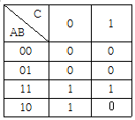
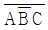
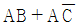
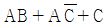
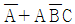
(정답률: 알수없음)

2. 에미터 접지 트랜지스터 증폭회로에서 에미터에 접속된 저항과 병렬로 연결된 콘덴서를 제거 했을 때 증폭기의 상태는 어떻게 되겠는가?
- 변화가 없다.
- 과전류가 흘러 트랜지스터가 파괴된다.
- 부궤환이 걸려 이득이 작아진다.
- 정궤환이 걸려 발진한다.
(정답률: 알수없음)
3. 변조도 60 %의 AM에 있어서 반송파의 평균 전력이 100W일 때 피변조파의 평균 전력은?
- 118 W
- 130 W
- 136 W
- 160 W
(정답률: 82%)
4. 전압안정화 회로의 특성으로 가장 알맞는 것은?
- 온도가 변할 때 출력전압은 일정하다.
- 출력전압이 변할 때 부하전류는 일정하다.
- 입력전압이 변할 때 출력전압은 일정하다.
- 부하가 변할 때 출력전압은 일정하다.
(정답률: 알수없음)
5. 다음 그림과 같은 회로의 전달 특성은? (단, VR1 ＜ VR2 )
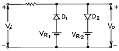
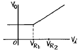
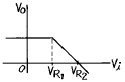
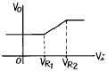
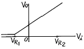
(정답률: 알수없음)
6. 다음 J-K Flip-Flop의 입력신호의 주파수가 5[MHz]일 때 출력신호의 주파수는?
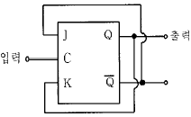
- 500[MHz]
- 2.5[MHz]
- 10[MHz]
- 25[MHz]
(정답률: 알수없음)
7. 그림은 무슨 회로인가?
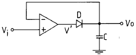
- Voltage follower
- Differentiator
- Peak detector
- Integrator
(정답률: 알수없음)
8. 저 임피이던스 부하에서 고전류이득을 얻으려할 때 사용되는 증폭 방식은?
- 베이스 접지
- 에미터 팔로워
- 에미터 접지
- 캐스코우드 증폭기
(정답률: 알수없음)
9. 이득이 40[dB]인 저주파 증폭기가 10[%]의 왜율을 가지고 있을 때 이것을 1[%]로 개선하기 위해서는 대략 얼마의 전압 부궤환을 걸어 주어야 하는가?
- 60[dB]
- 40[dB]
- 30[dB]
- 20[dB]
(정답률: 알수없음)
10. 다음 연산회로에서 전압이득(
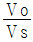
)은?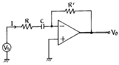
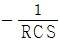
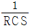
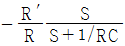
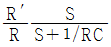
(정답률: 알수없음)
11. NAND 게이트로 구성된 SR 플립플롭에서 전의 상태를 유지하기 위해서는 SR이 어떤 경우일 때 인가?
- SR = 00일 때
- SR = 01일 때
- SR = 10일 때
- SR = 11일 때
(정답률: 알수없음)
12. L, C, R 직렬회로의 공진주파수에 대한 Q의 값은? (단, W 는 각속도)
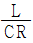
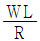
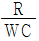
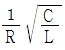
(정답률: 알수없음)
13. 아래의 연산 증폭회로에서 입출력 관계가 옳은 것은?
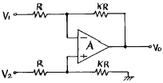
- VO = K(V2 - V1)
- VO = KV2 - (K + 1)V1
- VO = (K + 1)V2 - KV1
- VO = (K + 1)(V2 - V1)
(정답률: 알수없음)
14. 다음의 회로에서 출력 Vo는?
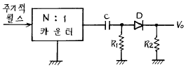
- 양(+)의 펄스
- 음(-)의 펄스
- 대칭 펄스
- 반파 대칭 펄스
(정답률: 알수없음)
15. 디지털데이터를 디지털신호로 전송하는 회로 장치는?
- CODEC
- 변ㆍ복조회로
- DSU
- 전화
(정답률: 알수없음)
16. 필터법을 이용하여 DSB 파에서 SSB 파를 얻어내려면 어떤 종류의 필터를 사용해야 하는가?
- 저역필터(LPF)
- 전대역필터(APF)
- 고역필터(HPF)
- 대역필터(BPF)
(정답률: 알수없음)
17. 2n개의 입력신호 중 1개를 선택하여 출력하는 기능을 가진 회로는?
- Encoder
- Decoder
- Mux
- Demux
(정답률: 알수없음)
18. 그림의 회로에서 V1 = 3V, Rf = 450kΩ, R1 = 150kΩ 일 때, 출력 전압 VO 는?
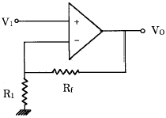
- 1〔V〕
- 12〔V〕
- 15〔V〕
- 18〔V〕
(정답률: 알수없음)
19. 30:1의 리플계수기를 만들려면 최소한 몇 개의 플립-플롭(filp-flop)이 필요한가?
- 5개
- 10개
- 15개
- 30개
(정답률: 알수없음)
20. 다음 회로가 나타내는 전달특성은? (단, D는 이상적인 다이오드 이다.)
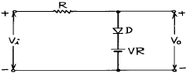
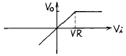
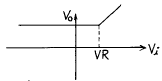
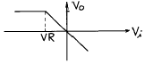
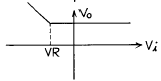
(정답률: 알수없음)
2과목: 무선통신 기기
21. 다음 중 수신기의 보조(부속)회로가 아닌 것은?
- 주파수변환부 회로
- 뮤팅회로
- 자동이득 제어회로
- 자동주파수 제어회로
(정답률: 알수없음)
22. 주파수 변조를 진폭 변조와 비교할 경우 다음중 틀린것은?
- 신호대 잡음비(S/N비)가 좋아진다.
- 초단파대 통신에 적합하다.
- 에코의 영향이 많아진다.
- 주파수 대역폭이 넓다.
(정답률: 알수없음)
23. 순시 주파수 편이제어(Instantaueous Deviation Countrol)회로를 사용하는 목적은?
- AM변조에서 반송파 주파수를 일정하게 하기 위해서
- FM변조에서 반송파 주파수를 일정하게 하기 위해서
- AM변조에서 최대 주파수 편이가 규정치를 넘지않게 하기 위해서
- FM변조에서 최대 주파수 편이가 규정치를 넘지않게 하기 위해서
(정답률: 알수없음)
24. 다음 중 LC 필터의 특징이 아닌 것은?
- 필터 특성의 조정이 쉽다.
- LPF, BPF, HPF 등 여러가지 필터의 구현이 가능하다.
- 주파수 선택도 Q가 우수하다.
- 수 kHz이하에서는 L과 C가 커지므로 필터의 크기가 커진다.
(정답률: 알수없음)
25. 그림과 같은 pre-emphasis회로에 시정수가 75[μs]가 되도록 하려면 C의 값을 얼마로 하면 되는가?
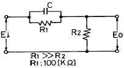
- 7500[pF]
- 750[pF]
- 75[pF]
- 7.5[pF]
(정답률: 알수없음)
26. 오실로 스코프로 송신기 출력파형을 관찰 하였더니 그림과 같은 파형을 얻었다. 이 송신기의 변조도는?
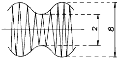
- 80%
- 60%
- 30%
- 20%
(정답률: 알수없음)
27. 다음의 주파수 변조 중에서 직접 FM 방식에 속하지 않는 것은?
- 리액턴스관 변조회로
- Vector 합성법에 의한 방법
- 반사형 Klystron을 사용한 변조회로
- 가변용량 다이오드를 사용한 변조회로
(정답률: 알수없음)
28. 일반적인 수신기 구성 중 수신안테나로부터 가장 멀리 떨어져 있는 회로는?
- 입력정합회로
- 전치증폭기
- 대역통과필터
- 검파기
(정답률: 알수없음)
29. 무선방위 측정에서 전파전파에 따른 오차에 해당하지 않은 것은?
- 야간오차
- 해안선의 오차
- 대륙현상
- 산란현상
(정답률: 알수없음)
30. 다음은 SSB송신기 계통도이다. 음성대역신호 주파수 대역 폭을 5kHz로 하고 제1국부발진 주파수를 10kHz라고 할 때 상측파대를 사용하려면 제1BPF의 통과주파수 대역은 얼마인가?
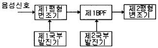
- 5kHz∼15kHz
- 10kHz∼15kHz
- 15kHz∼25kHz
- 30kHz∼35kHz
(정답률: 알수없음)
31. 스미드 챠트에 의해 정규화 임피던스를 구한 결과 1.65+j1.82를 얻었다. 지금 전송선로의 특성 임피던스 (Zo)를 50[Ω]이라하면 부하 임피던스(Zr)은 얼마인가?
- 82.5+j91
- 82.5-j91
- 83.5+j95
- 83.5-j95
(정답률: 알수없음)
32. 대역폭이 6kHz인 수퍼 헤테로 다인 수신기가 650kHz를 수신 하고 있을때 영상 혼신 주파수는? (단, 중간 주파수는 455kHz 임)
- 1560 [kHz]
- 1755 [kHz]
- 1111 [kHz]
- 916 [kHz]
(정답률: 알수없음)
33. CDMA방식에 대한 설명으로 틀린 것은?
- Spread spectrum 기술을 이용한 것이다.
- 광대역의 주파수폭을 필요로 한다.
- 코드의 검출이 어렵기 때문에 통신의 비밀이 보장된다.
- 광대역특성이므로 간섭의 영향도 크다.
(정답률: 알수없음)
34. 정류기의 평활 회로에 사용하고 있는 필터는?
- 고역 필터
- 저역 필터
- 대역 통과 필터
- 대역 소거 필터
(정답률: 알수없음)
35. 스트레이트 수신기에 비해 슈퍼헤테로다인 수신기의 특징 중 틀린 것은?
- 넓은 주파수대에 걸쳐 조정을 바꿀 필요는 없다.
- 수신 주파수에 관계없이 수신 감도와 선택도가 거의 일정하다.
- 높은 주파수대에서 국부발진기의 주파수 안정도가 낮아진다.
- 회로가 간단하게 되고 조정이 쉽다.
(정답률: 알수없음)
36. 100MHz의 반송파를 최대 주파수편이 50kHz로 하고 10kHz의 신호파를 FM변조하였다. 변조지수mf 와 대역폭Β 는 각각 얼마인가?
- mf=10, Β =10kHz
- mf=5, Β =50kHz
- mf=10, Β =100kHz
- mf=5, Β =120kHz
(정답률: 알수없음)
37. 연축전지에서 과충전을 해야할 경우가 아닌 것은?
- 8시간 이상 사용했을 경우
- 정격용량 이상으로 방전하였을 경우
- 완전방전후 즉시 충전하지 않았을 경우
- 전지의 사용을 오래동안 사용하지 않았을 경우
(정답률: 알수없음)
38. 전송하려고 하는 신호를 표본화 한 다음에 양자화하고 부호화하여 송신장치로 송신하는 방식은?
- PAM
- FDM
- PPM
- PCM
(정답률: 알수없음)
39. FSK 방식의 특징이 아닌 것은?
- 비교적 회로가 간단하다.
- ASK에 비하여 대역폭이 넓다.
- 잡음 및 레벨 변동에 강하다.
- AFC회로가 필요 없다.
(정답률: 알수없음)
40. 슈퍼 헤테로다인 수신기에서 중간 주파수의 선정에 있어 고려될 필요가 없는 것은?
- 국부 발진기의 주파수 안정도
- 영상 주파수 방해
- 초고주파에 의한 방해
- 단일 조정의 용이성
(정답률: 알수없음)
3과목: 안테나 공학
41. 안테나공학 무선송신 설비에 있어서 안테나의 기저부에 코일(L)을 삽입 하였을 때의 효과는?
- 등가연장
- 등가단축
- 영향무
- 정합
(정답률: 알수없음)
42. 공전(空電)의 잡음을 경감시키는 방법중 적당하지 않은 것은?
- 지향성 안테나를 사용한다.
- 수신전력을 증가시킨다.
- 높은 주파수를 사용한다.
- 비접지 안테나를 사용한다.
(정답률: 알수없음)
43. 임의의 안테나 입력전력을 P 라 할때 거리 r 에서 최대 전계강도를 E 라 하고, 이에 대응해서 기준 안테나의 입력전력을 Po , 전계강도를 Eo 라 할때 안테나의 이득을 나타내는 식은 어느 것인가?
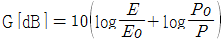
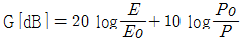
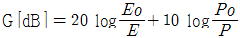
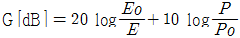
(정답률: 알수없음)
44. 동축케이블의 특성 임피던스는? (단, D : 외부도체의 지름 , d : 내부도체의 지름)
- D가 클수록, d는 적을수록 커진다.
- D가 적을수록, d는 클수록 커진다.
- D와 d가 클수록 커진다.
- D와 d가 적을수록 커진다.
(정답률: 알수없음)
45. 지구의 실제 반경을 r,등가지구반경을 R,또 지구의 등가 반경 계수를 K라 할때 이들은 어떤 관계식을 갖는가?
- R = K2r
- R = Kr2
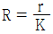
- R = Kr
(정답률: 알수없음)
46. 대수주기형 안테나에 대한 기술로서 옳지 않은 것은?
- 안테나의 크기와 모양이 비례적으로 커지는 여러개의 소자안테나로 되어 있다.
- 안테나의 전기적 특성은 주파수의 대수로서 주기적으로 변화한다.
- 수평면내 쌍향성의 8자 지향특성을 나타낸다.
- 매우 넓은 주파수 대역을 갖는다.
(정답률: 알수없음)
47. 도파관의 임피던스 정합 방법으로 맞지 않는 것은?
- 스터브(stub)에 의한 방법
- 창(window)에 의한 방법
- 금속막대(post)에 의한 방법
- 1/2파장 변성기에 의한 방법
(정답률: 알수없음)
48. 중위도 지방(한국)에서는 태양폭발이 관측된 후 얼마후에 자기람이 발생되는가?
- 수 분후
- 수십분후
- 수시간∼수십시간 후
- 수일∼수십일 후
(정답률: 알수없음)
49. Helical 안테나 설명 중 틀린 것은?
- 구조가 간단하고 고이득이므로 방송용으로 사용한다.
- 반사파에 의해서 동작한다.
- 광대역 주파수 특성이 있다.
- 나선형 안테나라고도 한다.
(정답률: 알수없음)
50. 제펠린(zeppelin)안테나에 관한 설명이다. 틀린 것은?
- 전압급전 방식을 사용한다.
- 평형형 동조급전방식을 사용한다.
- 수신기 급전회로에서 직렬공진시 급전선의 길이는 λ /4의 우수배로 한다.
- 수평면내 지향성은 8자형 패턴을 가진다.
(정답률: 알수없음)
51. 다음 중 비접지형 단일소자로 구성되지 않는 안테나는?
- 헬리컬 안테나
- 루프 안테나
- 야기 안테나
- 슬리브 안테나
(정답률: 알수없음)
52. 자유공간에 수평으로 놓인 반파 다이폴 안테나의 중앙 급전점의 전류가 10[A]이다. 안테나와 직각인 방향으로 10[km]떨어진 점의 전계강도는?
- 43[mV/m]
- 47[mV/m]
- 60[mV/m]
- 84[mV/m]
(정답률: 알수없음)
53. 길이가 반파장인 2선식 폴디드(folded)안테나(도선의 굵기는 같고 두 도선은 충분히 접근해 있는 것으로 한다)의 급전점 임피던스는?
- 36.56[Ω]
- 73[Ω]
- 192[Ω]
- 292[Ω]
(정답률: 알수없음)
54. 50[Ω]의 저항이 25[Ω]인 부하로 종단되었다면 이점에서의 정재파비는?
- 3
- 2.5
- 2
- 1.25
(정답률: 알수없음)
55. 지표파 전파의 특징 중 틀린 것은?
- 지면도중의 凸凹에 별로 영향을 받지 않는다.
- 대지의 도전율이 클수록 멀리 도달한다.
- 주파수가 높을 수록 멀리까지 전파한다.
- 수직편파가 잘 전파한다.
(정답률: 알수없음)
56. 프레넬(Fresnel) 타원체에 관한 설명중 옳지 않은 것은?
- 구면 회절손실을 일으키는 영역의 해석에 관련된 것이다.
- 직접파와 회절파가 간섭현상이 일어나는 영역이다.
- VHF대 이상에서 전파의 직선통로와 곡선통로의 차이가 λ /2의 정수배인 점들의 궤적이다.
- 전파통로상의 장애물이 적어도 제1 프레넬 영역(Fresnel Zone)을 가리지 않는 것이 통신에 유리하다.
(정답률: 알수없음)
57. 선로의 특성 임피이던스가 300[Ω]인 급전선에 100[Ω]의 부하를 연결하였을때 반사손실(PR/P)을 구하시오. (단, PR : 부하에서 소비되는 전력 P : 선로에 공급되는 전력)
- 1/2
- 2/3
- 4/3
- 3/4
(정답률: 알수없음)
58. 도파관 메탈렌즈에서 굴절율을 0.8로 하기 위한 메탈판의 간격을 구하면? (단, f = 10[GHz]이다.)
- 2.5cm
- 5cm
- 7.5cm
- 10cm
(정답률: 알수없음)
59. 절대이득이 G 인 안테나의 실효면적은?
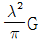
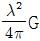
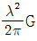
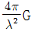
(정답률: 알수없음)
60. 전리층 F층의 임계 주파수를 f0= 20[MHz]라 하고 입사각 60도로 입사시킬 때 최적운용 주파수 FOT는 몇 MHz인가?
- 21
- 24
- 31
- 34
(정답률: 알수없음)
4과목: 무선통신 시스템
61. 위성 중계기에서 고출력 증폭기의 효율을 나타내는 공식은?
- (RF출력전력)/(DC입력전력) × 100[%]
- (DC출력전력)/(DC입력전력) × 100[%]
- (DC출력전력)/(RF입력전력) × 100[%]
- (RF출력전력)/(RF입력전력) × 100[%]
(정답률: 알수없음)
62. 전파의 도약거리란 다음 중 어느 것을 말하는가?
- 지표파나 공간파의 혜택을 받지 않는 공간의 거리
- 송신점으로 부터의 가시거리
- 송신점으로 부터 지표파가 감쇠되는 점까지의 거리
- 송신점으로 부터 공간파가 처음으로 도달하는 점까지의 거리
(정답률: 알수없음)
63. PCM 통신방식 중 북미방식인 T1의 다중화는 몇 채널(channel)이 가능한가?
- 32CH
- 30CH
- 26CH
- 24CH
(정답률: 알수없음)
64. 다음 중 위성통신의 단점이 아닌 것은?
- 전파 지연
- 미이용 주파수의 이용 가능성
- 스크램블의 필요성
- 정지 궤도의 유한성
(정답률: 알수없음)
65. PCM 통신 방식의 특징으로 맞지 않는 것은?
- 전송로에 의한 레벨 변동이 거의 없다.
- PCM 고유(특유)의 잡음이 발생한다.
- 디지털 신호 전송시 능률이 떨어진다.
- 외부 잡음 등 방해에 강하고 저질의 전송로에도 사용할 수 있다.
(정답률: 알수없음)
66. 이동통신에서 다경로 신호에 의한 전파의 페이딩(fading) 방지책과 거리가 가장 먼 것은?
- 다이버시티를 사용한다.
- 수신기에 등화기(Equalizer)를 첨가한다.
- 지향성이 예민한 안테나를 사용한다.
- 송신주파수를 안정시킨다.
(정답률: 알수없음)
67. 무선통신에서 일반적인 잡음개선 방법이 아닌 것은?
- 수신전력을 크게 하여 S/N비를 개선시킨다.
- 전원측에 필터를 사용하고 송신전력을 크게 한다.
- 평행식 급전선을 사용하거나 수신기를 완전히 차폐 한다.
- 수신기의 실효대역폭을 좁히고 선택도를 높인다.
(정답률: 알수없음)
68. 기지국으로부터 송신 반송파 주파수가 fc이고, 이동국이 υ 속도로 수신파에 대해 θ 의 방향으로 움직이고 있는 경우 수신되는 신호 fr은?
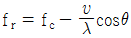
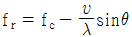
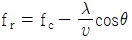
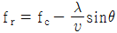
(정답률: 알수없음)
69. 다음 중 위성을 이용한 응용과 거리가 먼 것은?
- 국제전화와 영상통신을 중계하는데 이용할 수 있다.
- 대류권의 변화 상태를 수집하는 용도로 이용할 수 있다.
- 지하자원과 산림자원 등을 파악하는 용도로 이용할 수 있다.
- VHF대역의 무선통신을 직접 감청하는 용도로 이용할 수 있다.
(정답률: 알수없음)
70. 한 전송선로의 데이터 전송시간을 일정한 시간구간(Time slot)으로 나누어 각 부채널에 차례로 분배함으로써 몇 개의 저속 부채널이 한 개의 고속전송선을 나누어 이용하는 다중화방식은?
- TDM
- FDM
- PCM
- SDM
(정답률: 알수없음)
71. 마이크로파 통신망으로 치국계획 할 때 고려해야 할 사항과 가장 거리가 먼 것은?
- 총 경로손실
- 통신망의 성능
- 전력 소모율
- 총 장비이득
(정답률: 알수없음)
72. 정지위성을 중계국으로 하는 지구국의 설비는 안테나와 통신장치가 필요하다. 이 때 이들을 배치하는 방식은 신호의 전송형식으로 분류되는데 다음 중 틀린 것은?
- 베이스밴드 전송방식
- 간접 결합방식
- 마이크로파 전송방식
- IF 전송방식
(정답률: 알수없음)
73. 우리나라 TV 방송국의 한 채널분 대역폭은?
- 6[MHz]
- 8.2[MHz]
- 3.58[MHz]
- 4.2[MHz]
(정답률: 알수없음)
74. 무선 송신기에서 발생하는 스퓨리어스 발사의 방지 방법으로 잘못된 것은?
- 전력 증폭단의 바이어스를 취한다.
- 급전선에 트랩(trap)을 삽입한다.
- 증폭단과 공중선 결합회로에 π 형 회로를 사용한다.
- 전력 증폭단을 push-pull로 접속한다.
(정답률: 알수없음)
75. 레이다 송신기에서 펄스폭 0.5[μs], 펄스반복주파수 1,000Hz, 첨두전력 40[kW]인 경우 평균전력은 얼마인가?
- 2[W]
- 20[W]
- 200[W]
- 2[kW]
(정답률: 알수없음)
76. 이동통신 시스템의 존(zone)은 무엇을 말하는가?
- 한 무선교환국이 수용할 수 있는 트래픽 범위 지역
- 한 무선기지국이 담당하는 범위인 무선 구역
- 이동통신 시스템이 제공할 수 있는 전체 서비스 영역
- 자동차 전화시스템망이 일반 전화망으로 제공할 수 있는 구역
(정답률: 알수없음)
77. 셀룰러 방식에서 기지국의 서비스 지역을 확대시키는 방법이 아닌 것은?
- 다이버시티 수신기 사용
- 송신 출력의 증가
- 기지국 안테나 높이의 증가
- 수신기의 수신 한계 레벨을 높게 조정
(정답률: 알수없음)
78. 다음 중 위성통신의 특성이라고 볼 수 없는 것은?
- 대용량 전송 및 고속통신이 가능하다.
- 다른 통신매체에 비하여 천재지변에 강하다.
- 전송지연이 없고 반향효과가 적은 장점이 있다.
- 원거리 멀티포인트 통신에 통신이 가능하다.
(정답률: 알수없음)
79. 무선통신에서 야기되는 전파잡음중 공전방해로 인한 대기 잡음이 발생한다. 이러한 공전으로 인한 잡음을 경감시키기 위한 대책으로 적합하지 못한 것은?
- 지향성이 예민한 안테나를 사용한다.
- 수신기의 선택도를 높이도록 한다.
- 진폭제한회로가 부가된 수신기를 설치한다.
- 다이버시티 수신기법을 이용한다.
(정답률: 알수없음)
80. 전리층의 높이를 측정할 때 주로 사용되는 파형은?
- 정현파
- 3각파
- 구형파
- 펄스파
(정답률: 알수없음)
5과목: 전자계산기 일반 및 무선설비기준
81. 기준 주파수란 무엇인가?
- 지정 주파수에 대하여 특정한 위치에 고정되어 있는 주파수를 말한다.
- 공간에 발사되어 용이하게 식별되고 측정할 수 있는 주파수를 말한다.
- 무선국에서 안정적으로 동작하는 주파수를 말한다.
- 무선국에서 사용하는 주파수 마다의 중심 주파수를 말한다.
(정답률: 알수없음)
82. 고주파이용설비인 전력선반송 및 유도식통신설비에서 발사되는 주파수의 허용편차는 얼마인가?
- 0.01 퍼센트
- 0.1 퍼센트
- 1.0 퍼센트
- 10.0 퍼센트
(정답률: 알수없음)
83. 전파형식 J3E의 법정 점유주파수대폭의 허용치는?
- 3 [kHz]
- 5 [kHz]
- 6 [kHz]
- 8 [kHz]
(정답률: 알수없음)
84. 정보통신기기인증규칙에 의하여 형식등록을 한 무선설비에 대한 설명으로 적합한 것은?
- 수출시 외국의 인증을 면제받는다.
- 공공기관 판매시 구매 규격 시험을 면제받는다.
- 국내 유통 및 운용이 가능하다.
- 무선설비를 개조하여 이용할 수 있다.
(정답률: 알수없음)
85. 인터럽트 발생시 프로그램의 복귀 번지를 저장하는 것은?
- Stack
- Queue
- Deque
- PC
(정답률: 알수없음)
86. 컴퓨터의 메모리 크기 단위 중에서 가장 큰 것은?
- KB
- MB
- GB
- TB
(정답률: 알수없음)
87. 무선설비형식검정을 받고자 할때는 관련자료를 누구에게 제출하여야 하는가?
- 전파연구소장
- 전파방송관리국장
- 중앙전파관리소장
- 무선국관리사업단장
(정답률: 알수없음)
88. 다음 debugging과 관계가 적은 것은?
- coding
- single step
- trace
- dump
(정답률: 알수없음)
89. CPU에서 논리연산 또는 산술연산을 행하였을 때 그 결과의 상태(Status)를 나타내는 레지스터는?
- 인덱스 레지스터
- 상태 레지스터
- 명령 레지스터
- 스택 포인터
(정답률: 알수없음)
90. 정보통신부장관이 주파수분배를 하여야 하는 경우 고려하여야 할 사항이 아닌 것은?
- 주파수의 이용현황 등 국내의 주파수 이용여건
- 민간인의 주파수 사용동향
- 전파이용기술의 발전추세
- 전파를 이용하는 서비스에 대한 수요
(정답률: 알수없음)
91. 전파형식의 표시에서 기본특성내에 송신할 정보 형태 중 기호 F는?
- TV(영상)
- TV(음성)
- 전신
- 전화
(정답률: 알수없음)
92. 다음 중에서 8비트로 1의 보수 표현 방법에 의하여 +10과 -10을 올바르게 표현한 것은 어느 것인가?
- +10 : 00001010, -10 : 11110101
- +10 : 00001010, -10 : 11111010
- +10 : 10001010, -10 : 11110101
- +10 : 10001010, -10 : 11111010
(정답률: 알수없음)
93. 프로그램 카운터와 명령의 주소부분을 더해 유효 주소로 결정하는 주소지정방식은?
- Base Addressing
- Index Addressing
- Immediate Addressing
- Relative Addressing
(정답률: 알수없음)
94. 다음 중 음의 정수를 연산하기 가장 쉬운 것부터 나열한 것은?
- 부호와 절대치 → 1의 보수 → 2의 보수
- 부호와 절대치 → 2의 보수 → 1의 보수
- 1의 보수 → 2의 보수 → 부호와 절대치
- 2의 보수 → 1의 보수 → 부호와 절대치
(정답률: 알수없음)
95. 다음중 전파법시행령에 의하여 준공검사를 받지 아니하고 운영할 수 있는 무선국이 아닌 것은?
- 30와트 미만의 무선설비를 시설하는 어선의 무선국
- 형식등록을 한 무선설비를 사용하는 아마추어국
- 국가안보 또는 대통령 경호를 위하여 개설하는 무선국
- 형식등록을 한 무선설비로 정부가 개설하는 무선국
(정답률: 알수없음)
96. 공중선전력 10와트를 초과하는 무선설비에 사용하는 전원 회로에서 갖추어야 할 보호장치는?
- 퓨즈 또는 자동차단기
- 선택호출장치 또는 식별장치
- 퓨즈 또는 선택호출장치
- 자동차단기 또는 식별장치
(정답률: 알수없음)
97. 다음 중 중앙처리장치(CPU)의 동작속도에 가장 큰 영향을 미치는 것은?
- 레지스터의 종류
- 프로그램 카운터길이
- 외부버스의 길이
- 클럭주파수
(정답률: 알수없음)
98. 다음 각 자료형 중에서 가장 적은 비트의 수를 필요로 하는 것은?
- 실수형 자료(real type)
- 정수형 자료(integer type)
- 문자형 자료(character type)
- 논리형 자료(boolean type)
(정답률: 알수없음)
99. 다음 중 정보통신기기인증규칙에 적용되지 않는 경우는?
- 형식승인을 얻어야 할 경우
- 전자파흡수율측정을 하여야 할 경우
- 전자파적합등록을 하여야 할 경우
- 형식검정을 받아야 할 경우
(정답률: 알수없음)
100. 인터럽트 발생원인이 아닌 것은?
- 정전
- 조작자의 의도적인 조작
- 0으로 나누었을 때
- 임의의 부프로그램에 대한 호출
(정답률: 알수없음)